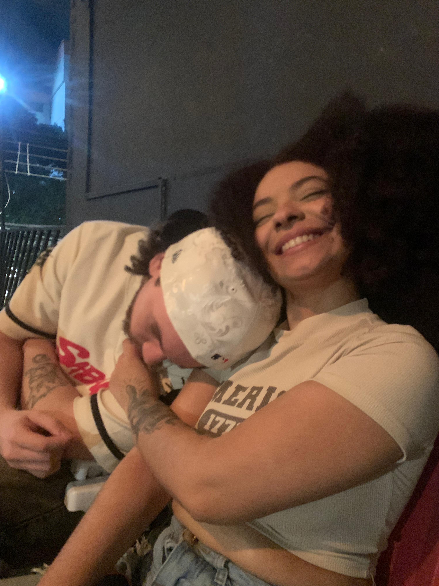

Eu sei que atualmente não estamos em um momento bom da nossa relação, mas gostaria de tentar descrever o quanto eu gosto de você Karen bispo. o quanto eu te admiro e o quanto eu sou feliz com você, então eu estou fazendo isso como um gesto de carinho, para te mostrar boa parte do que eu sinto por você.
"Obrigado por ser minha bocó"